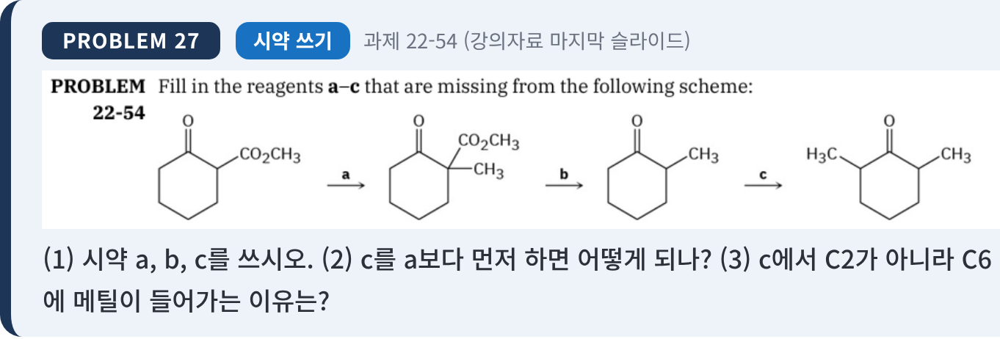
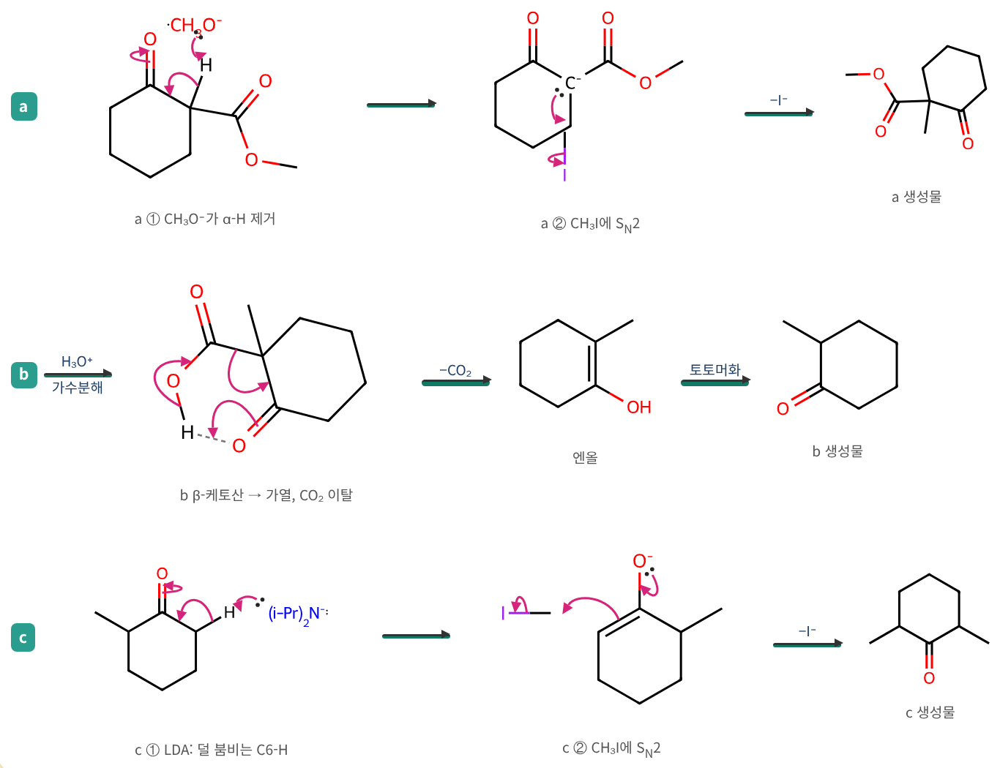
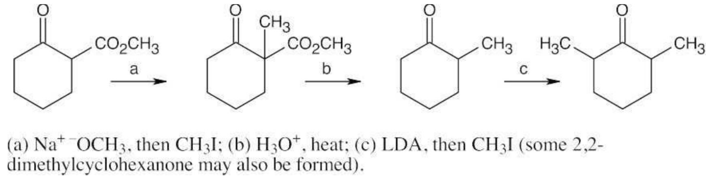

TOP1위
1등급 · 무조건 100% 출제! 교수님 지정 과제 4인방
문제 27 — 빠진 시약 a~c 채우기
22장 최종 보스과제 22-54 · 마스터요약 p.49출제 확률
⚡ 1초 직관 공식 & 내 필기 핵심
- 22장의 3대 핵심 스킬인
1,3-다이카르보닐 위치 지정 알킬화(a) → 가열 탈카르복실화(b) → 뚱보 LDA 위치 선택적 알킬화(c) 를 하나로 묶어 ‘2,6-다이메틸사이클로헥사논’을 합성하는 종합 최종 보스 문제다. - 초특급 디테일 (시약 a): 출발 물질의 에스터 꼬리가 에틸(–Et)이 아니라
메틸에스터(–CO₂CH₃) 이므로, 꼬리가 바뀌는 부반응(에스터 교환)을 막기 위해 반드시 짝을 맞춰NaOCH₃ (CH₃OH) 를 써야 한다 (습관적으로 NaOEt를 쓰면 감점!). - 순서 불변의 법칙: 출발 물질은 C2 수소(pKa ≈ 11)가 C6 수소(pKa ≈ 19)보다 산성도가
약 1억 배(10⁸배) 더 강해서, 에스터 도우미를 날리기 전에 LDA를 먼저 넣으면 무조건 C2 수소가 뽑히므로 반드시a → b → c 순서 를 지켜야 한다.
📋 문제 원문 & 구조식 빨강 핵심 원자·이탈 초록 새로 붙는/남는 것 파랑 날아가는 것·강조

- 반응식 흐름 (과제 22-54): 메틸 2-옥소사이클로헥세인카복실레이트(C1에 C=O, C2에 –CO₂CH₃) → [시약 a] → 메틸 1-메틸-2-옥소사이클로헥세인카복실레이트(C2에 –CH₃와 –CO₂CH₃ 동시 결합) → [시약 b] → 2-메틸사이클로헥사논(C2에 –CH₃만 남음) → [시약 c] → 2,6-다이메틸사이클로헥사논(C2와 C6 양쪽에 –CH₃ 결합).
- 소문항: (1) 빠진 시약 a, b, c를 쓰시오. (2) c를 a보다 먼저 하면 어떻게 되나? (3) c에서 C2가 아니라 C6에 메틸이 들어가는 이유는?
🔍 단계별 원자 이동 & 메커니즘 상세 해설

1막 · a 단계
에스터 도우미(–CO₂CH₃)가 있는 오른쪽(C2)에 첫 번째 메틸기 박기
원리: 양쪽 카르보닐기(C=O) 사이에 샌드위치처럼 끼어 있는 C2 수소는 산성도가 매우 강하므로(pKa ≈ 11), 일반 알콕사이드 염기만 넣어도 쉽게 엔올레이트(C⁻)가 되어 SN2 반응으로 메틸기가 붙는다. 이때 출발 물질이 메틸에스터(–CO₂CH₃)이므로 에스터 교환 부반응을 방지하기 위해 짝을 맞춘
- a① CH₃O⁻가 α-H 제거: CH₃O⁻ 산소의 비공유 전자쌍이 두 카르보닐 사이의 C2–H를 떼어내고, C–H 결합 전자가 C2 탄소(및 C=O 쪽 공명)로 이동해 엔올레이트 음이온(C⁻)을 만든다.
- a② CH₃I에 SN2 공격: C2 음이온(C⁻)이 아이오도메테인(CH₃–I)의 탄소를 뒤에서 공격하여 새 C–CH₃ 결합을 만들고 동시에 I⁻가 이탈하여 C2에 –CH₃와 –CO₂CH₃가 모두 붙은 a 생성물이 완성된다.
2막 · b 단계
임무를 마친 에스터 도우미(–CO₂CH₃) 날려버리기 (가수분해 + 탈카르복실화)
원리: 산성 물(
- 가수분해 및 6원 고리 전이상태: H₃O⁺ 가수분해로 만들어진 β-케토산이 가열되면 고리 케톤의 C=O 산소가 카복실산(–COOH)의 H를 향해 수소결합처럼 마주 보며 6원 고리 전이상태를 이룬다.
- 화살표 3개 동시 이동 (–CO₂ 이탈): 케톤 C=O의 π 전자가 산소–수소 결합을 만들고, 카복실산 O–H 결합 전자가 안쪽으로 접혀 O=C=O(CO₂) 이중결합을 만들며, 고리 C2와 카복실산 탄소를 잇던 C–C 단일결합 전자가 고리 쪽으로 넘어와 엔올 이중결합(C=C–OH)을 만든다.
- 토토머화: CO₂ 기체가 날아간 뒤 남은 엔올이 케토형으로 토토머화되어 b 생성물(2-메틸사이클로헥사논)이 된다.
3막 · c 단계
한산한 반대편 왼쪽(C6) 자리에 두 번째 메틸기 박기
원리: 이제 에스터 도우미가 사라진 평범한 단일 케톤(pKa ≈ 19)이므로 강염기가 필요하다. 이미 메틸기가 자리를 차지해 비좁은 오른쪽(C2)을 피하고, 입구가 널찍하고 한산한 왼쪽(C6) 수소만 골라 뽑는 뚱보 강염기
- c① LDA가 덜 붐비는 C6–H 제거: 부피가 큰 (i-Pr)₂N⁻(LDA)가 덜 치환된 왼쪽 C6의 α-H를 떼어내면서 C–H 전자가 C1=C6 이중결합을 만들고 C=O π 전자가 산소 위로 올라가 속도론적 엔올레이트(O⁻)가 된다.
- c② CH₃I에 SN2 공격: 산소 음이온(O⁻) 전자쌍이 다시 내려와 C=O를 복구하면서, C6 탄소가 CH₃–I를 SN2 공격해 I⁻를 쫓아내고 최종 생성물인 2,6-다이메틸사이클로헥사논을 완성한다.
시험 답안지용 최종 모범 답안정답
(1) 시약 정답
a: 1. NaOCH₃ (CH₃OH), 2. CH₃I / b: H₃O⁺, heat(가열) / c: 1. LDA, THF, 2. CH₃I (소량의 2,2-다이메틸사이클로헥사논 부생성물 가능).
(2) c를 a보다 먼저 하면 안 되는 이유
출발 물질은 오른쪽(C2)에 에스터기(–CO₂CH₃)가 붙어 있어 두 카르보닐 사이에 낀 C2 수소(pKa ≈ 11)가 왼쪽 C6 수소(pKa ≈ 19)보다 산성도가 약 1억 배 더 강하다. 산성도 차이가 이처럼 압도적이면 부피가 큰 LDA를 넣더라도 한산한 C6로 가지 않고 산성도가 훨씬 큰 C2 수소를 먼저 떼어내므로 C6 위치에 선택적 알킬화가 일어나지 않는다.
(3) c에서 C6에 메틸이 들어가는 이유
2-메틸사이클로헥사논에 입체 장애가 큰 강염기 LDA를 저온(−78 °C)에서 처리하면, 메틸기 때문에 붐비는 C2 대신 덜 치환되어 입체적으로 한산한 C6 위치의 α-H를 훨씬 빠르게 제거하여 ‘속도론적 엔올레이트’를 형성하기 때문이다.
